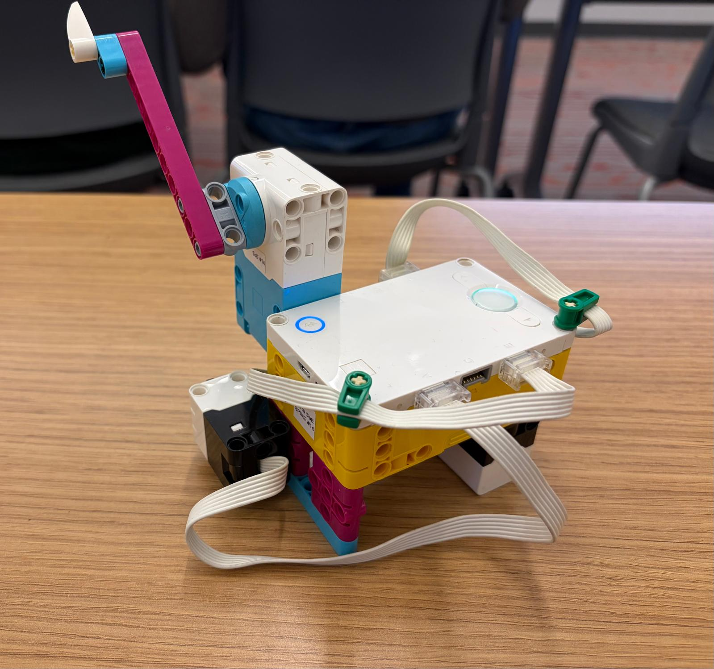

The program records two training measurements labeled short and two labeled tall using a distance sensor. When the force sensor is pressed for a new object, it compares that measurement with the four training readings and predicts the label of the closest reading. The motor turns in one direction for a short prediction and the opposite direction for a tall prediction.
# Setup: force sensor on port A, distance sensor on port E, motor on port F.
from hub import port
import runloop
import force_sensor
import distance_sensor
import motor
# Set the motor speed in degrees per second.
MOTOR_SPEED = 300
async def main():
# Ask for the first training object, which is labeled short.
print("Place training object 1 (short), then press the force sensor.")
while not force_sensor.pressed(port.A):
await runloop.sleep_ms(20)
short_distance_1 = distance_sensor.distance(port.E)
while force_sensor.pressed(port.A):
await runloop.sleep_ms(20)
# Ask for the second training object, which is labeled tall.
print("Place training object 2 (tall), then press the force sensor.")
while not force_sensor.pressed(port.A):
await runloop.sleep_ms(20)
tall_distance_1 = distance_sensor.distance(port.E)
while force_sensor.pressed(port.A):
await runloop.sleep_ms(20)
# Ask for the third training object, which is labeled short.
print("Place training object 3 (short), then press the force sensor.")
while not force_sensor.pressed(port.A):
await runloop.sleep_ms(20)
short_distance_2 = distance_sensor.distance(port.E)
while force_sensor.pressed(port.A):
await runloop.sleep_ms(20)
# Ask for the fourth training object, which is labeled tall.
print("Place training object 4 (tall), then press the force sensor.")
while not force_sensor.pressed(port.A):
await runloop.sleep_ms(20)
tall_distance_2 = distance_sensor.distance(port.E)
while force_sensor.pressed(port.A):
await runloop.sleep_ms(20)
# Check that all four training measurements were valid before prediction mode.
if (short_distance_1 == -1 or tall_distance_1 == -1
or short_distance_2 == -1 or tall_distance_2 == -1):
print("A training reading was invalid. Restart and check the sensor and objects.")
else:
print("Training complete. Prediction mode: press the force sensor for each new object.")
# Keep measuring and classifying new objects.
while True:
# Wait for a force-sensor press to request a prediction.
while not force_sensor.pressed(port.A):
await runloop.sleep_ms(20)
# Measure the new object's distance.
new_distance = distance_sensor.distance(port.E)
# Classify only if the sensor returned a valid measurement.
if new_distance == -1:
print("No valid distance reading. Place the object in view and try again.")
else:
# Start by treating training object 1 as the closest neighbor.
closest_difference = abs(new_distance - short_distance_1)
predicted_label = "short"
# Compare the new measurement with training object 2.
difference = abs(new_distance - tall_distance_1)
if difference < closest_difference:
closest_difference = difference
predicted_label = "tall"
# Compare the new measurement with training object 3.
difference = abs(new_distance - short_distance_2)
if difference < closest_difference:
closest_difference = difference
predicted_label = "short"
# Compare the new measurement with training object 4.
difference = abs(new_distance - tall_distance_2)
if difference < closest_difference:
predicted_label = "tall"
# Print the nearest-neighbor prediction and move the motor accordingly.
print("Prediction: " + predicted_label)
if predicted_label == "short":
await motor.run_for_degrees(port.F, 45, -MOTOR_SPEED)
else:
await motor.run_for_degrees(port.F, 45, MOTOR_SPEED)
# Wait for the force sensor to be released before accepting another request.
while force_sensor.pressed(port.A):
await runloop.sleep_ms(20)
runloop.run(main())